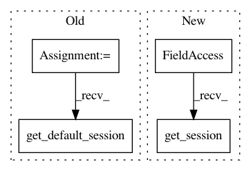

c543b405dbc12fcdaa47ca74a740317b99a1437f,softlearning/algorithms/rl_algorithm.py,RLAlgorithm,__init__,#RLAlgorithm#Any#Any#Any#Any#Any#Any#Any#Any#Any#Any#,20
Before Change
self._eval_deterministic = eval_deterministic
self._eval_render = eval_render
self._sess = tf_utils.get_default_session()
self._env = None
self._policy = None
self._pool = None
After Change
self._eval_deterministic = eval_deterministic
self._eval_render = eval_render
self._sess = tf.keras.backend.get_session()
self._env = None
self._policy = None
self._pool = None
In pattern: SUPERPATTERN
Frequency: 3
Non-data size: 4
Instances
Project Name: rail-berkeley/softlearning
Commit Name: c543b405dbc12fcdaa47ca74a740317b99a1437f
Time: 2018-11-06
Author: hartikainen@berkeley.edu
File Name: softlearning/algorithms/rl_algorithm.py
Class Name: RLAlgorithm
Method Name: __init__
Project Name: rail-berkeley/softlearning
Commit Name: c543b405dbc12fcdaa47ca74a740317b99a1437f
Time: 2018-11-06
Author: hartikainen@berkeley.edu
File Name: softlearning/policies/gmm.py
Class Name: GMMPolicy
Method Name: log_diagnostics
Project Name: rail-berkeley/softlearning
Commit Name: c543b405dbc12fcdaa47ca74a740317b99a1437f
Time: 2018-11-06
Author: hartikainen@berkeley.edu
File Name: softlearning/policies/gaussian_policy.py
Class Name: GaussianPolicy
Method Name: log_diagnostics